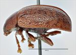
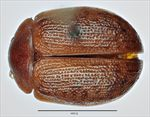
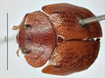
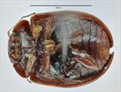
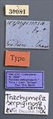
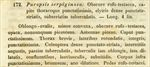

Click on images to enlarge
{kind=link}

Fig. 1. Paropsis serpiginosa type specimen, lateral view
{kind=link}

Fig. 2. Paropsis serpiginosa type specimen, lateral view
{kind=link}

Fig. 3. Paropsis serpiginosa type specimen, anterior view
{kind=link}

Fig. 4. Paropsis serpiginosa type specimen, ventral view
.jpg){kind=link}

Fig. 5. Paropsis serpiginosa type specimen, labels
{kind=link}

Fig. 6. Paropsis serpiginosa, description
Name
Paropsis serpiginosa Erichson, 1842
Diagnosis and Notes
Blackburn (1896) indicates that serpiginosa is one of those species whose type he has not seen, but is included in the key from the characters in the description. He deals with it as part of his 'subgroup ii' (i.e., those species without "strongly marked characters", whose greatest height is not or scarcely in front of the middle of the elytral margin and whose elytra are depressed under the humeral callus). Within that group, he characterises it as:
A. Inner edge of humeral callus distinctly nearer to lateral margin of elytra than to suture;
B. Sides of prothorax more or less explanate;
C. Elytra not having well-defined continuous costae;
D. Puncturation of the elytra not particularly fine;
E. Upper surface of elytra in general, or at least the verrucae, black or nearly so;
FF. Explanate margins of prothorax much narrower [i.e., less than about 1/3 of width of discal part];
G. Median verrucae of prothorax scarcely defined;
HH. prothorax not coloured as in piceola [i.e., not with contrasting dark in the middle and pallid sides];
I. Elytral verrucae large, all isolated, nowhere confused with interstitial rugulosity;
JJ. Puncturation of prothorax very close and asperate.
From examination of the photos of the type specimen, it is clear that T. serpiginosa is the same species as Ta102.
Type specimen
Museum für Naturkunde Berlin
Type not examined, but photos of type obtained via D.W. de Little. Type locality is Tasmania ("Vandiemensland").
Original description
Translation of original description (Figure 6) by ChatGPT, 04/2026:
Paropsis serpiginosa: dark reddish-testaceous; head and thorax very densely punctured; elytra densely punctate-striate, with somewhat serial tubercles. Length 4 lines [~8.5 mm].
Oblong-oval, less convex, dark reddish-testaceous, dull, sometimes becoming pitchy. Antennae pitchy. Head very densely punctured. Thorax short, sides rounded, margins entire, very densely punctured. Elytra densely punctate-striate, the interstices narrow, here and there tuberculate, the tubercles sometimes oblong, sometimes broadened and confluent, somewhat smooth and slightly shining. Underside of body very densely punctured, brown, the apex of the abdomen paler. Legs reddish-testaceous.
References
Erichson, W.F. 1842, "Beitrag zur Insecten-fauna von Vandiemensland, mit besonderer Berucksichtigung der geographischen Verbreitung der Insecten", Archiv für Naturgeschichte, vol. 8, no. 1, 83-287 (page 228).
Copyright © 2026. All rights reserved.